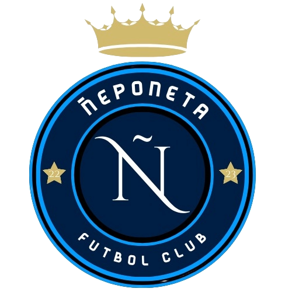

Nuestra Historia
Ñeponeta nació de un grupo de amigos en 2021 con ganas de jugar al fútbol y divertirse gracias a la jornada. Lo que empezó como un equipo para la jornada, se terminó convirtiendo en una familia. en 2024 hubieron unos cambios repentionos para el club, fichajes claves para la fecha y la salida de varios traidores en el equipo, en esta temporada ñepo esta mas fuerte que nunca, ante el reciente ingreso a la liga intecolegial TIFA ñepo esta volviendo a dar catedra de como jugar a la pelota.
Nuestros colores representan la pasión y la garra que le ponemos a cada partido.
